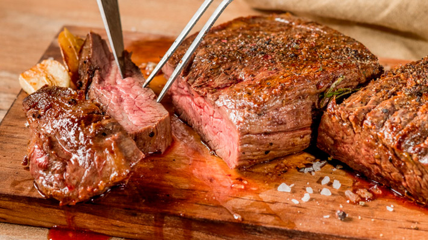

Asado

Description
Looks like a simple piece of meat, but it isn't. It's the traditional argentinian way to make a good old asado.
Keep in mind that you must have a grill, firewood, and a little bit of wine to enjoy the procces.
Ingredients
- Brisket
- Salt
- Parsley
- Oregano
- Ground chili
- Garlic
- Vinegar
- Vegetable oil
Steps
First, we have to make our chimichurri
- Prepare a brine. Bring the water to a boil in a small saucepan. Add the salt and stir until dissolved. Remove from heat and let cool.
- Chop the garlic into very small pieces and place it in a bowl. Chop the parsley and oregano and add them to the bowl. Add the ground chili.
- Add the vinegar, stirring the entire mixture, and then the oil. Add the brine, stir and transfer to a jar that closes tightly. Keep in the refrigerator.
Now, let's move on with the funny part.
- Light the fire to achieve a good amount of embers, it can be with either charcoal or firewood.
- Place a good layer of coals under the grill and heat the irons until they reach temperature.
- Salting the meat, as it is a small cut, fine salt can be used, however, it is always advisable to use grill salt, the pepper is to the taste of each barbecuer.
- Half an hour of fire on the side of the bones, until you notice that small drops of blood begin to sprout on the side of the meat, it is a good time to turn the strip. Once it is on the meat side, just brown it so that it is crispy and with color, it will be enough with about ten minutes at the most
- Let the rest, plate and add the chimichurri.
Last but not least, enjoy!